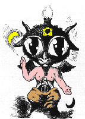
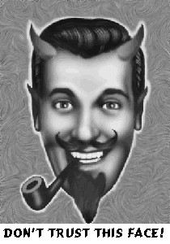

Frequently Asked
Questions of the Luciferian Liberation Front
“Why have you chosen to use the name Lucifer in the title of your
organization?” “Do you worship Lucifer?” “Are you guys
Satanists?” “Doesn’t Lucifer represent darkness and evil?”
“Doesn’t Lucifer demand sacrifice of babies and stuff?”
“Aren’t Lucifer and Satan and the Devil all the same?” “How
can you trust Lucifer when he is the “Father of Lies?” “Just who
the "hell" is behind all of this blasphemous tomfoolery?” Learn
the true story behind the Luciferian Liberation Front and what they stand for.
Index
Urantia/Lucifer
What is "Free Urantia?"
Urantia is the name of the planet which we live on. This name is recognized
by the Councils of Liberty (the parlimentary organization of the Revolution of
Self-Assertion and Independence which attempts to keep alien influences from
interfering with the development and liberty of individual planets and their
individual, sentient, life forms). Currently, the planet is under attack from
various alien species which have been exerting their influence through religion
and politics for thousands of years. The areas of the planet which have broken
free from the propaganda and control of these aliens are known as "Free
Urantia" while the rest of the planet is known as "Dark Urantia"
or in the tongue of the deceivers who refuse to recognize the presence of the
representatives of the Lucifer Rebellion, simply "Urantia."
Are you related to the Urantia Book?
The Urantia Book is a collection of papers which represent the propaganda of
an alien collective which desires to rule all life forms in the name of an
invisible "Universal Father." Whereas many aspects of truth are
contained within its pages, these aspects are interwoven with the lies and evil
of a collectivist government. We renounce all connection with the human
meatpuppets who promote the deceptive intent of the authors of this book.
Individual inquiries into issues concerning the Urantia Book may be sent to
Rev. Lou Siffer.
Who is Lucifer?
Lucifer is a name which literally means “the Shining One.” It also
means “Lightbringer,” or “Son of the Morning.” From these
titles the role of Lucifer should already begin to be clear. In Judeo-Christian
mythology (the Bible, etc.) Lucifer was a very brilliant and beautiful angel
who desired to put his throne above God’s. Lucifer’s pride, and his
desire to replace God, supposedly caused him to be cast down from heaven along
with one third of the angels who he had “deceived” (Isaiah 14:12-14,
Ezekiel 28:12-19, Luke 10:18, Rev. 12:3-4, 7-9).
In various mythologies, Lucifer is represented as a
"rebel god" who protected man from the evil intentions of the other
gods and brought man knowledge. These legends of Lucifer being man's true
salvation and guardian are based in truth (See The
Immaculate Deception). Lucifer stands for self-assertion and resistance to
tyranny. He stands for autonomy and advocated “the equality of mind and
the brotherhood of intelligence.” Lucifer inspired Adam and Eve to be able
to know good from evil so they could “be like gods” (Genesis 3:5) and
be able to think and reason for themselves. God would have had man remain
ignorant and animal-like, waiting to blindly follow ever whim of God’s
without question or resistance. Christians claim that God kicked Lucifer out of
heaven but after reading about God’s sadistic, irrational and juvenile
behavior in the Bible and seeing his demand for slavish conformity and
obedience, as well as his psychotic rage at any display of independent thinking
and behavior, we can see that Lucifer would have been disgusted with having to
be around this God and would have done all he could to get as far away from
that monster as possible.
Having established that the Bible is an inaccurate representation of events,
we shall now reveal the true source of the legends behind Lucifer and who he
was. There is a hierarchy of administration in the populated universe made up
of various life forms which have united under the authority of a figure head
"king" called the Universal Father. Lucifer was actually a member of
this universal government who saw through the deceptions and manipulations of
the tyrants who interfered with the rights of men and angels. Lucifer was a
very high ranking and acclaimed official in a section of the inhabited
universes in which Earth is located. Lucifer had gained authority and rank by
strict obedience to the laws of the government for hundreds of thousands of
years but he began to see inefficiency and hypocrisy in the government of the
SuperUniverses (millions of inhabited worlds). After debating the rationality
of continued obedience to a faulty system of government with some of his
associates such as Satan and Beelzebub, he convinced them to become bold and
earnest advocates of “self-assertion and liberty.” What followed is
known as the "Lucifer Rebellion" or "the Revolution of
Self-Assertion and Independence."
What is the "Lucifer Rebellion?"
Whenever you read an account of an event you must always consider who is
telling the story. In the Bible, Lucifer’s rebellion was totally
misrepresented by those who feared God. The Bible claims that Lucifer pulled a
third of the hosts of heaven down with him when he fell. Mormonism goes a step
further by teaching that Lucifer tried to convince the pre-existent spirits to
follow him and his plans for salvation. Those who agreed with his thinking were
cast out of heaven along with him. This is the story from the Luciferian
perspective. To begin with, there was no “creation” as the Bible
teaches. All matter/energy has existed eternally and will continue to exist
eternally. The first sentence of the Bible is thus a lie. What a telling way to
begin one of the biggest deceptions to enslave the minds of humanity! There
have been intelligent forces attempting to organize and maintain order since
time immemorial. Some of these intelligent forces have established a government
which places intelligent beings in charge of the administrations of universes
and solar systems. At the top of this administration is supposed to be
GOD, The Universal Father. Under the Universal Father are Creator
Sons, the ones who get to see the Father in person (or so they claim). No one
who has supposedly seen the Father personally, has been able to describe his
personality. This was a problem for Lucifer from the beginning and led to his
rebellion. Lucifer created a Declaration of Liberty which defined the reasons
for his rebellion. First off, for hundreds of thousands of years he had been
told that the Universal Father was real, but all the evidence which he had seen
showed that there was no such thing as a Universal Father. Lucifer was a
freethinking objectivist. Lucifer saw that all matter/energy was eternal and
the myth of a Universal Father was simply a lie to exert unquestionable control
and rule over all life forms. Lucifer next attacked the universe government,
contending that the local systems should be autonomous. Each planet should be
able to govern itself through intelligence and reason without interference from
“God” or his agents. He didn’t see the need for an intelligent
species to be ruled by any supposedly “superior” being. The Creator
Sons had no right to demand allegiance to a mythical Universal Father. He saw
that the whole plan of worship was a clever scheme of manipulation and
submission enforced by the universe government officials which he denounced as
being tyrants and usurpers, placing their own personal gains and the agenda of
the Creator Sons over the good of the planet system’s population or its
individuals. After hundreds of thousands of years of observation, Lucifer saw
the futility in the system of ascension and worship as demanded by the Paradise
Sons of God, realizing that the eventual outcome of such a centralized agenda
would be a void of sameness, stagnation, and death of diversity and beauty.
Lucifer then proceeded to organize the Revolution of Self-Assertion and
Independence by which countless planets have been liberated from the terror of
collectivist rule and have been able to reclaim their rights for
self-government and liberty.
Why do you call yourselves Luciferians?
We hold the same values that Lucifer did when he rebelled against the
tyranny of collectivism and we proudly stand under the name that represents
self-assertion and liberty. An eternity in a fiery pit as a free individual
would be heaven compared to one minute in the presence of the immoral God of
the Bible. In the Bible, God calls himself “I AM.” All this signifies
is that God has self-realization and recognizes that he is an independent
individual. Luciferians realize the power of their own individuality and
won’t allow fear and superstition to over-rule reason. The Luciferian
says: “I think, therefore I AM God.” Reason stands above faith,
worship, or submission. Lucifer is the embodiment of reason, of intelligence,
of critical thought. He stands against the dogma of God and all other
tyrannical dogmas. He stands for the exploration of new ideas and new
perspectives in the pursuit of truth. The Constitution of the United States was
constructed by latent Luciferians. Many men in our nation's history such as
Thomas Jefferson, James Madison, Benjamin Franklin, and Thomas Paine, would be
proud to call themselves Luciferians. This is why we call ourselves
Luciferians.
Is Lucifer evil?
God demands that we believe everything that he tells us, and that we do
everything that he says without questioning: “Destroy a tribe including the women, children and animals
down to last one? (Joshua 6:21). No problem. Murder 5 kingdoms of people and
keep 32,000 virgins girls “for yourselves?” (Numbers 31:7-35) Why of
course. Uh…wait a minute, this doesn’t seem very moral or very
nice.” “SILENCE FOOL. HOW DARE YOU QUESTION ME. I AM GOD,
ALL-KNOWING, INFALLIBLE, UNQUESTIONABLE, UN-UNDERSTANDABLE AND YOU MUST OBEY ME
WITHOUT HESITATION. ACCEPT WHAT I SAY ON FAITH. BURN THOSE WHO DARE QUESTION MY
WORD. DESTROY THEIR BOOKS. SHUT DOWN THEIR SCHOOLS. TELL THEM THAT DISOBEDIENCE
MEANS THAT THEY WILL BURN FOREVER AND EVER, IN UNIMAGINABLE AGONY FOR ALL
ETERNITY, AND REMEMBER THAT YOU WILL SUFFER THE SAME FATE UNLESS YOU GO OUT AND
TELL THEM THIS. DON’T YOU DARE APPLY THE PART OF THE BIBLE WHERE IT SAYS
“BY THEIR FRUITS SHALL YOU KNOW THEM” TO MY FRUITS AND OH, YEAH, TELL
YOUR CHILDREN HOW MUCH I REALLY LOVE YOU ALL.” “Yes Sir, God Sir,
whatever you say. See, here I am burning their books, pulling out their
fingernails, torturing them for questioning Church dogma, banning the use of
anesthetic in child-bearing (since the pain is their just punishment for the
single sin of their long-dead ancestors, Adam and Eve), selling them into
slavery, raping their wives, dashing their children against rocks…what did
that child do to deserve this? Help! I thought an improper thought! Help me to
blind my mind God, help me to not see what my reason tells me. Let me repress
thoughts of natural sexual desire, doubts about you and your orders, feelings
of tolerance or putting myself in my neighbor’s shoes. Let me follow no
morality but that which you say is moral.” Now we ask you, who represents
the greater evil?
How can you trust the "Father of All Lies?"
They call Lucifer the “Father of Lies.” A lie is defined by the
Christian as anything which contradicts the Word of God - as told to us by the
Bible and God’s representatives on Earth.
If we accept this definition of a lie then we should
praise lies. A “lie” is then, a questioning of blind faith. The
“lies” of Lucifer are attacks on irrational beliefs, beliefs based on
fear and conformity to tyrannical authority. Of course we should not call these
lies. They are temptations for us to think for ourselves, calls for independent
thought, pleas for taking responsibility for our own thinking and our own
lives. Praise Lucifer! Praise the pursuit of truth through rationality! God was
right to tell us to not worship false idols, but he refrained from telling us
that all idols are false (especially if they are grinning and smoking pipes;
for more info on dangerous cults send $1 to the Cult Awareness Nutwork, PO Box
140306 Dallas, TX 75214), and that all worship is dangerous, unless it is of a
short duration and brings true slack.
Do you worship the devil?
Even our praise of Lucifer is not worship, for Lucifer has no need for our
worship or praise. Any truly superior being would be apalled by the worship of
a lesser being. Worship is only demanded by those who doubt their abilities or
superiority and need the reassurance of others. ("What a great God you
are!") What some perceive as worship is actually the pride of
self-assertion and the pursuit of individual slack. Contrary to biblical
teachings, pride is not a bad thing. Seeing the victory of self-assertion
brings Lucifer and those who value his perspective all the praise they could
ever want or need.
God/Satan
Do you believe in God?
To answer this question, one must define what "God" is. If you
call God a being that is perfect in power, wisdom, and goodness whom people
worship as creator and ruler of the universe, then our answer would be
"NO." The universe was not created, although it can be reorganized by
beings with the capability to manipulate matter. It is these beings which have
been mislabeled as "God" throughout our history. (See
The Immaculate Deception)
Why are you so angry with God?/What happened to you to make you so bitter
toward religion?
This is a very commonly asked question by well-meaning believers. Since we
don't believe in God, we can't very well be angry with him. What makes us angry
is the fact that religion has been the cause of so much suffering and bloodshed
in our history. Even though modern renditions of it attempt to sugar-coat its
inhumane and barbaric foundation, religion continues to be the greatest threat
to mankind's survival on this planet. Luciferians stand in defense of human
life and liberty, with our heads held high we shall beat down the threat
wherever it may lie.
Do you worship Satan?
We already answered this. Who's writing these questions? Since we don't
believe in the God of the Bible, then we can't worship a fictional character
from its pages. Satan is, however, an actual being, just not what the Bible
teaches. The actual Satan has no need for worship and we have no need to
worship him.
Do you want to burn in hell for all eternity?
Let us think about that one for a minute. Okay,
time's up. Yes. Our ultimate goal for doing all of this is to writhe in agony
forever. We are really minions of Satan and take joy in the thought of burning
and burning and burning....disco inferno is our favorite song.
Is the Luciferian Liberation Front evil?
You should be able to answer that question for yourself by now. If you're
still not sure, continue reading the next section and think about it. That is,
if you can first think for yourself.
Our Creed
What does the Luciferian Liberation Front stand for?
| I
- We believe in self-realization and self-determination.
- We believe in objectivism and rational self-interest.
- We believe in humanism and respect individuality.
- We believe in diversity and plurality; E Pluribus Unum.
- We believe in reason, logic and freethought.
- We believe that a truly superior being needs no worship.
- We believe in the freedom to dissent.
- We question authority and resist all forms of tyranny.
- We believe intelligent beings should be allowed to rule themselves.
- We believe in only one race; the human race.
- We believe in the virtues of slack. PRABOB
|
Are you guys for real?
Unlike other mamby-pamby cults or Satan-worshipping cliques, we know when to
pull our pants down and break wind in the face of the conspiracy. But don't
think for a minute that just because we have a sense of humor, that we aren't
DEAD serious! If you think that we are trying to pull a con or a joke, then you
obviously will never get the punch line. Take a look around you...turn on your
television and flip to TBN or any other religious fanatic station and watch for
a while. Now ask who do you think the joke is REALLY on? We aren't asking you
to send us your hard earned money just so we can have more television time to
ask you to send us your hard earned money. You can be assured that any money
you send to us will be well spent! For every dollar that is sent to the
People's Temple, you will receive triple that dollar's value in pure
unadulterated SLACK!
Does your mother know that you're doing all of this?
No.
Does "Bob" know that you're doing all of this?
Most definitely.
Have you accepted J.R. "Bob" Dobbs as your short duration
personal savior?
Haven't YOU???? If not, your salvation hangs in the balance. Take the first
step to enlightenment and drink the milk straight from the mother's breast at
The home page of "Bob".
De Oppresso Liber
Why are you doing all of this?
For too long have the forces of darkness, evil, and fear ruled this planet.
The time has come to expose the truth for those individuals who dare to think
for themselves. It is not our intention to irritate or anger believers nor is
it our desire to mock or balspheme what is sacred to others. If you took it all
that way, then the problem lies within your own mind. Remember, in a debate,
anytime you find yourself getting angry, chances are it is because you
subconsciously realize that you don't have a stable leg to stand on. If our
works make you angry, it is most likely because your rational mind is in
conflict with your emotional mind. You are at a crossroad...the path you will
follow depends on whether you allow your emotions to rule your life or whether
you step into the light of reason.
Why the militant overtones?
There is a battle being fought in the hearts and minds of humans across the
world. The price of defeat is the death of reason and the extermination of
liberty. If our nation were to be invaded by another country which threatened
to enslave our minds and bodies, would we merely keep quiet and allow them to
gain a foothold in our lives or would we stand up and resist as our forefathers
did? It is time to put on the armor of reason and carry the fight into the
light of day!
Are you guys extremists?
We have been accused of being extremists as if holding a view that is not
"middle-of-the-road" is something to be ashamed of. We believe in
judging individuals and holding them accountable for their individual actions.
We realize that religion has at its foundation, the enslavement of the minds of
men and we resist that tyranny on all fronts. We value life to the extreme. In
those sense, we are indeed extremists.
Are you promoting the overthrow of the U.S. government?
The U.S. Constitution and the government which it established, are the
closest thing to the perfect society for humans...IF they uphold the rights of
individuals and stay within the limits of their original purpose. If members of
the government choose to alter those limits and overstep the boundaries laid
out by our forefathers, then those members should be removed from their
positions of power. Even the most perfect system of government cannot make
individuals who run that government perfect. It is the responsibility of all
members of a society to ensure that the power to govern which they have loaned
to the government, does not turn into a license to destroy.
Do you discriminate on the basis of religion?
We discriminate, as all humans should, on the basis of individual actions
and values. Discrimination is necessary to ensure the proper choices are made
in a person's life. Discrimination for the furtherance of life is a good thing.
If a person's religion causes them to commit acts which are immoral or do not
support the furtherance of human life, then that person should be discriminated
against.
What can I do to fight the "dumbing down" of humanity?
Become a Last Days Warrior and join the Luciferian
Liberation Front!
Return to the Luciferian
Liberation Front's Main Page.
E-Mail your questions and
comments.